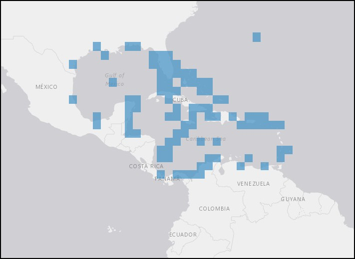

At the final leg of the journey, the Roman 2nd cruised along without issue thanks to the tradewinds that blow through the Caribbean Sea. The queen conch thrives in these waters.

More information on the taxa and distribution of Aliger gigas is available through OBIS Mapper here.